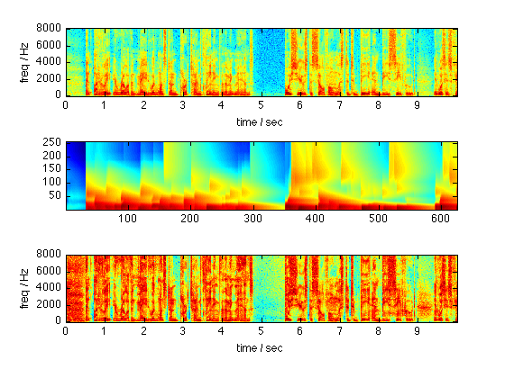

tf_agc - Time-frequency automatic gain control
This code implements automatic gain control for audio signals, which attempts to apply a smoothly-varying gain to an audio waveform in order to keep its energy close to some target level. This version also tries to balance the energy in individual frequency bands. It works by taking the short-time Fourier transform of the signal, smoothing that energy using time and frequency scales specified as arguments, then dividing out that scaled energy.
Contents
Example usage
% Load a speech waveform [d,sr] = wavread('speech.wav'); % Run it through the AGC [y,D,E] = tf_agc(d,sr); % Listen to the gain-normalized signal soundsc(y,sr) % Plot the spectrogram of the input signal subplot(311) % (stft is my included version of specgram) stft(d,512,512,256,sr) % Show the time-frequency-smoothed energy envelope that has been % normalized out by the AGC subplot(312) imagesc(20*log10(E)); axis xy % Spectrogram of the resulting, gain-normalized signal subplot(313) stft(y,512,512,256,sr); % % Other arguments: % Using a shorter time scale for more rapid gain variation soundsc(tf_agc(d,sr,0.1),sr); % Using a broader frequency scale, to minimize frequency-dependent % gain variation soundsc(tf_agc(d,sr,0.5,10),sr); % Use a narrow time and frequency scale to make signal very close % to white noise soundsc(tf_agc(d,sr,0.02,0.1),sr); % Use time-symmetric non-causal smoothing soundsc(tf_agc(d,sr,0.5,1.0,1),sr);
Download
You can download all the code and data for these examples here: tf_agc.zip.
Referencing
If you use this code in your research and you want to make a reference to where you got it, you can use the following citation:
D. Ellis (2010), "Time-frequency automatic gain control", web resource, available: http://labrosa.ee.columbia.edu/matlab/tf_agc/ .
Acknowledgment
This material is based in part upon work supported by the National Science Foundation under Grant No. IIS-0713334, by Eastman Kodak Corp, and by the National Geospatial Intelligence Agency NSERC program. Any opinions, findings and conclusions or recomendations expressed in this material are those of the author(s) and do not necessarily reflect the views of the sponsors.
Last updated: $Date: 2010/08/13 15:40:58 $ Dan Ellis dpwe@ee.columbia.edu